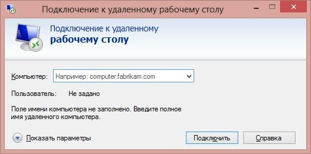
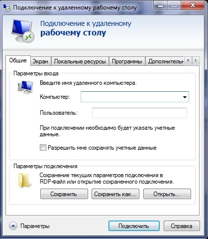

Для подключения компьютера к удаленному доступуаа используется RDP, но к сожалению у неё есть несколько минусов.
При первичном открытии программы, пользователь сразу не может ввести имя пользователя, которое потребуется при подключении, а ему придется сначала развернуть данное окно до позволительного размера.

После того, как развернулось окно для корректирования информации по удаленному доступу, пользователь к сожалению, не может его растянуть до нужного размера, но в окне есть кнопки переключения между вкладками.

Даже при первичном раскрытии, когда у нас ещё не развернуто окно корректировки информации, его тоже нельзя растянуть до необходимого размера.
Когда форма развернута, то нельзя переключаться между вкладками при помощи прокручивания колесика мыши, при таком действии проворачивается первый чекбокс на вкладке.